Event Trigger and Rules |
Top Previous Next |
|
Event Trigger and the Trigger Values The Event Trigger indicates that an event has been detected. It can be a gesture, a face, and so on.
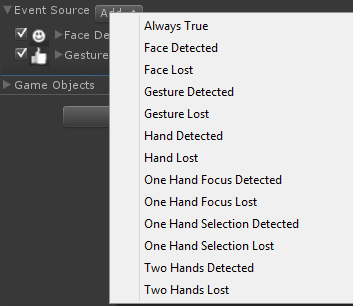 Event Trigger Rules You can use the following rules with the Event Trigger:
This rule always fires and is used for debug purposes.
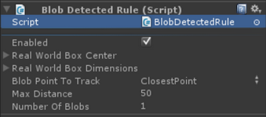 The rule fires whenever a blob has been detected in the specified Real World Box. You can change the blob maximum distance and the number of blobs to be detected.
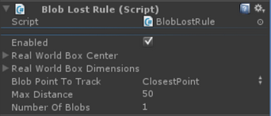 The rule fires whenever a blob has been previously detected in the specified Real World Box, and has now been lost. You can change the blob maximum distance and the number of blobs to be detected.
The rule fires whenever a new face has been detected.
The rule fires whenever a face previously detected has been lost.
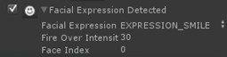 The rule fires whenever a new facial expression has been detected. The variable Facial Expression specifies which facial expression the rule will fire. The parameter Fire Over Intensity configures the minimal expression intensity over which the rule will fire, in the range of [0, 100]. Finally, the variable Face Index sets the face that will be considered in case of several faces visible to the camera. The index is provided in the ascending order of face appearance.
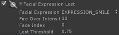 The rule fires whenever a facial expression that was previously detected has been lost. The field Facial Expression specifies the facial expression the rule will fire. The parameter Fire Over Intensity configures the minimal expression intensity over which the rule will fire, in the range of [0, 100]. The variable Face Index sets the face index if there are multiple faces visible to the camera. Finally, the Lost Threshold is used for robustness and controls how long a facial expression needs to be unrecognized to fire the rule.
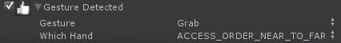 The rule fires whenever the specified gesture is recognized. You can configure the gesture to be detected from a list of supported gestures and select which hand the gesture belongs to.
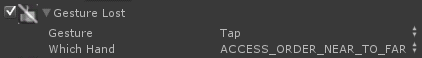 The rule fires whenever the specified gesture is recognized and then lost. You can change the gesture from a list of supported gestures and select which hand the gesture belongs to.
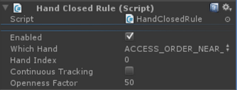 The rule fires whenever the specified hand’s openness is lower than the Openness Factor value.
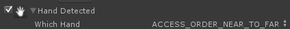 The rule fires whenever a hand has been detected. You can configure which hand to detected using the drop-down list. Continuous tracking overrides the hand index and tracks the same hand regardless whether other hands show or disappear during the run. For example, a right hand (index=0) is visible to the camera and is in tracking. The index may be changed to other values. But the tracking will continue on the same right hand.
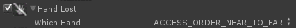 The rule fires whenever a hand previously detected has been lost. You can change which hand to detected using the drop-down list. Continuous tracking overrides the hand index and tracks the same hand regardless whether other hands show or disappear during the run. For example, a right hand (index=0) is visible to the camera and is in tracking. The index may be changed to other values. But the tracking will continue on the same right hand.
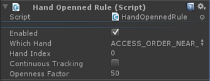 The rule fires whenever the specified hand’s openness is higher than the Openness Factor value.
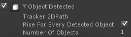 The rule fires whenever an object has been detected. The developer can provide a path to the 2D image that is being tracked. If Tracker 2DPath is empty, it will fire on every object detected. Number of Objects configures the number of objects the rule will fire in the case of multiple objects visible to the camera. The rule will fire for any object if Rise For Every Detected Object is checked.
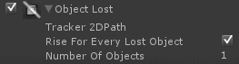 The rule fires whenever an object that was previously detected has been lost. The configuration is similar to the Object Detected rule.
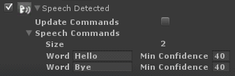 The rule fires whenever a speech command or phrase is recognized. You can provide a list of commands and set the minimum confidence scores, range from 0 to 100. Click Update Commands to change settings during playback.
The rule fires whenever both of the user’s hands have been detected.
The rule fires whenever the user’s hands previously detected are now lost.
|